Erik and Alejandro have established a base, but now they need supplies, food, weapons, and vehicles. It's time to go exploring and looting. They purchase ammunition from the refugee center by trading novels—apparently the refugees love reading—and hit the road in their RV. Tools are the first priority, so they can get vehicles working and build up their base.
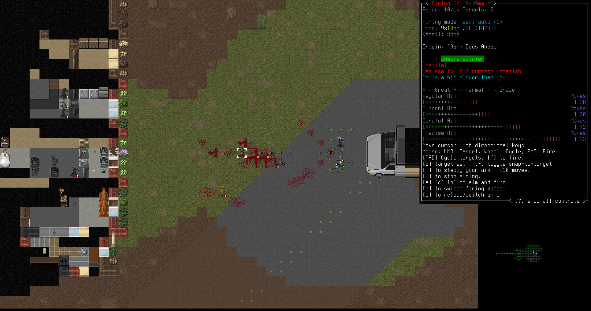The light industry scattered around the map are too valuable a target, with all the tools that can be found there. Erik and Alejandro move in guns blazing, Erik with his Uzi and Alejandro with his Glock 19. The battle is bloody and brutal, but they conquer the zombies and pack tools and resources into the RV to take back to the base.
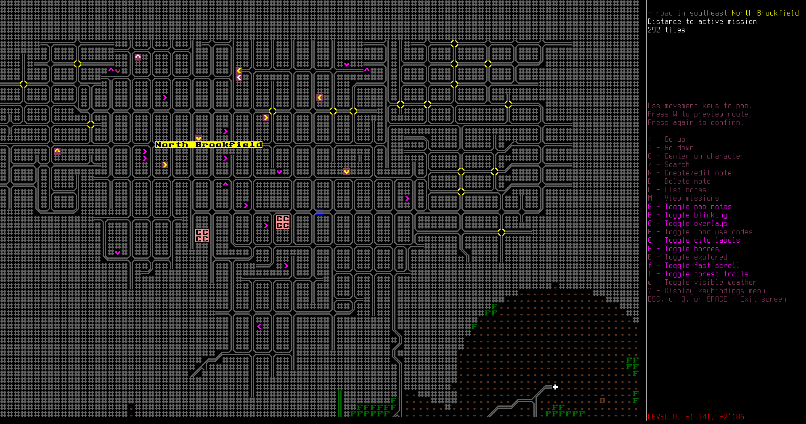One of the zombies was carrying a map, revealing a huge city just to the north. This interior of this huge city won't be raidable for a while, but the outskirts could provide valuable loot if Erik finds suitable peons to do the dirty work for him. Raiding is just too risky for the king himself, and Alejandro is really flimsy.
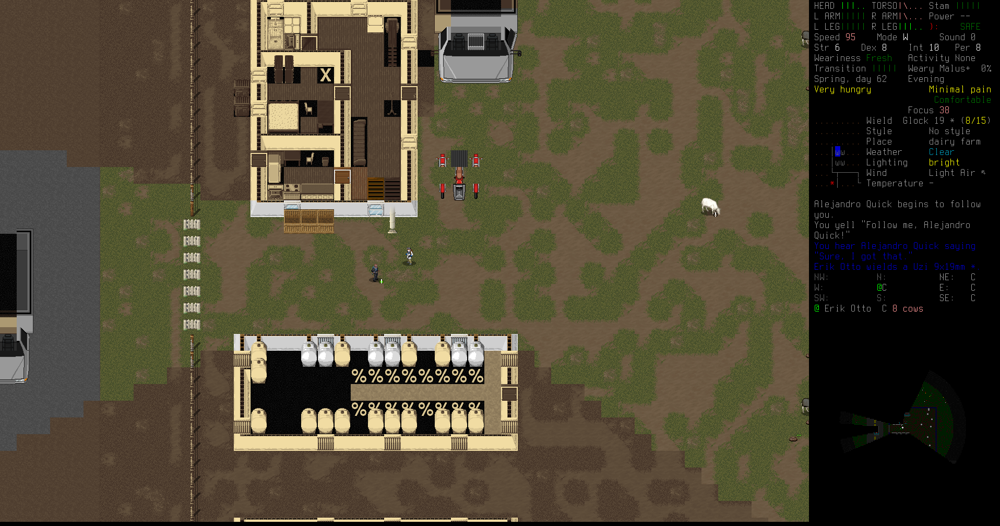At a dairy farm, Erik finds a working ATV and a working cube van. He and Alejandro shuffle the vehicles back home. They also take four cows, and tie them up just outside the base for milk and, perhaps, meat.
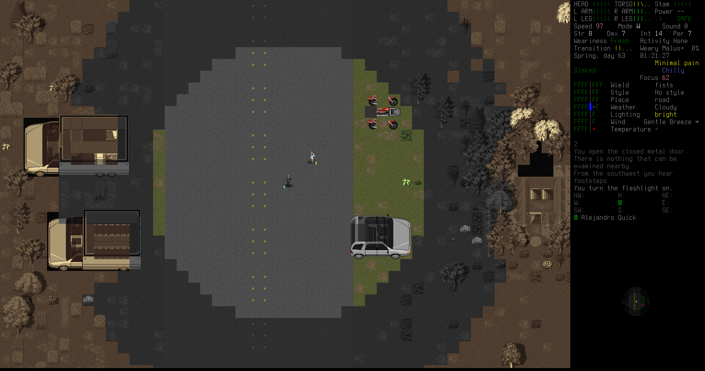The collection of vehicles outside the bunker is steadily growing. Erik is pleased with his options.
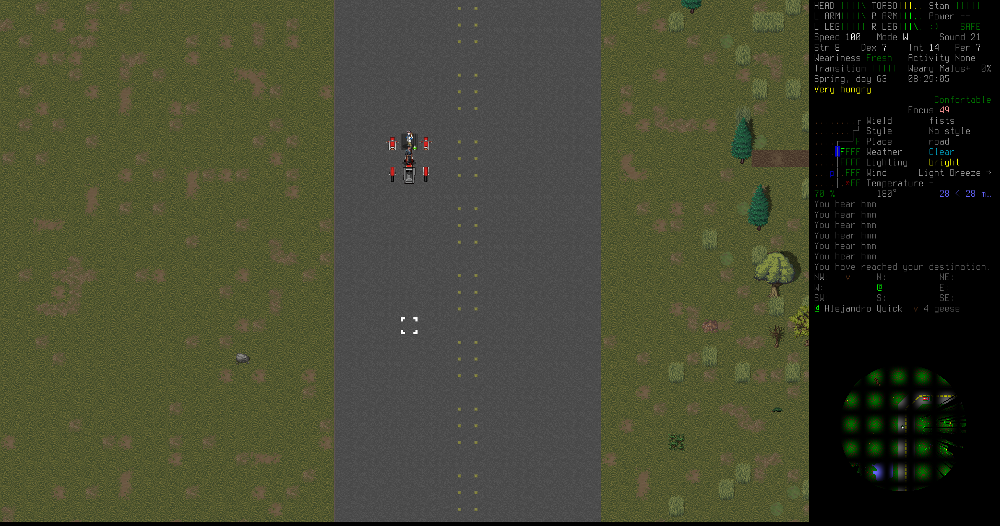He and Alejandro go out on a wild ATV exploration trip.
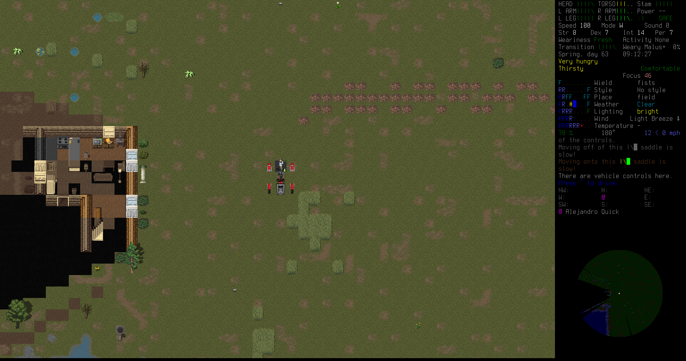They get chased by a huge underground worm, churning up the dirt, but they survive.
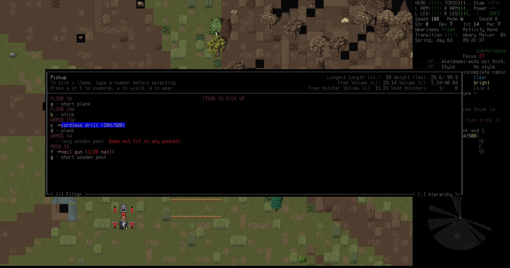At an incomplete cabin, abandoned during construction, they find a cordless drill. This is the missing piece they needed to replace vehicle fuel tanks, letting them collect a pickup truck that Erik had been wanting for a couple days.
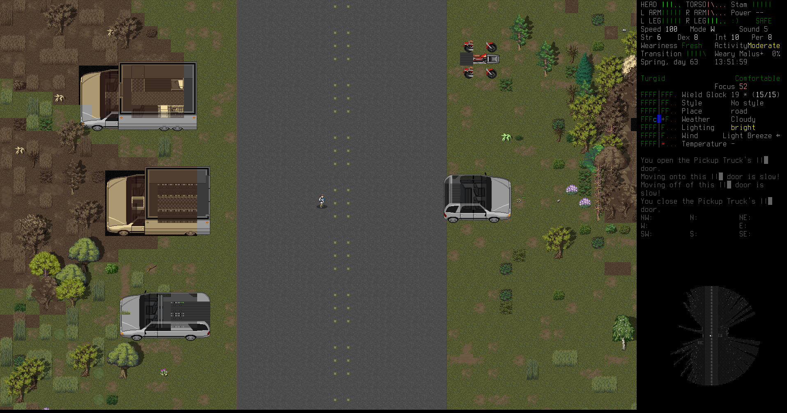The number of vehicles grows still more. Eventually they'll probably build custom vehicles, but for now whatever they can salvage will have to do.
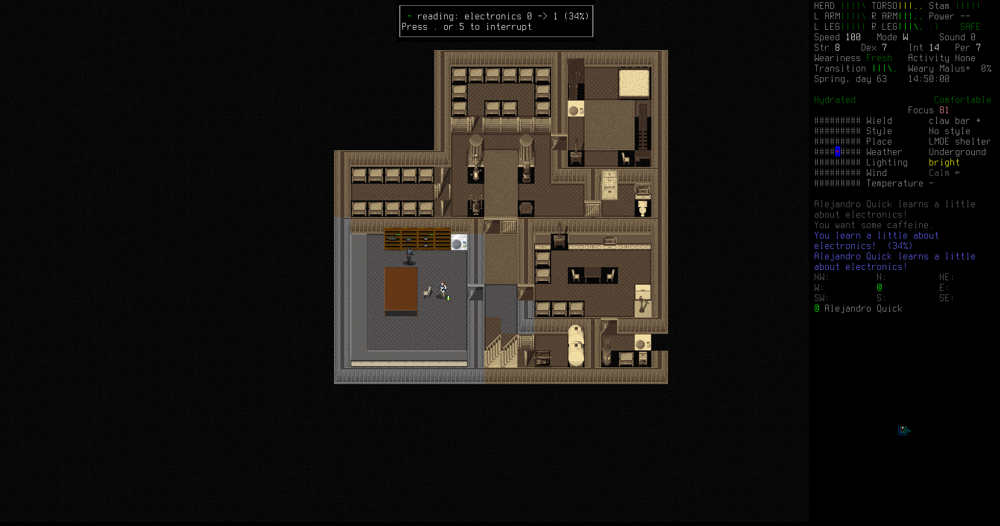With all these tools, Erik reads an electronics book to research how to hook up his solar panels to his appliances and get electricity off the grid.
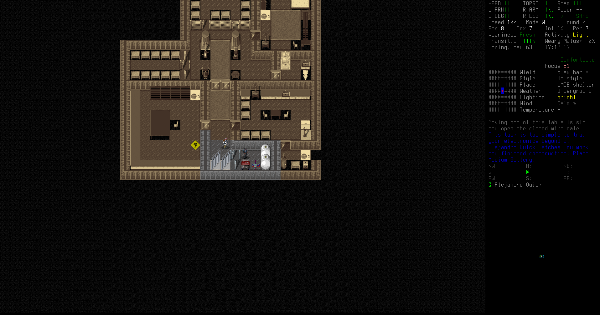He takes apart an electric jackhammer for the high-capacity battery and mounts it in his utility room.
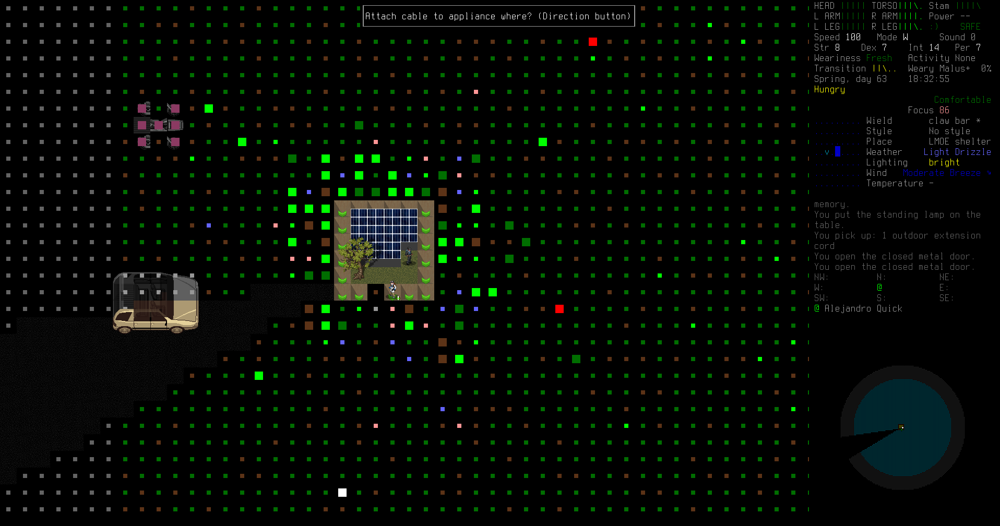Then Erik takes all of his solar panels that he salvaged from that solar car and places them up on top of the bunker hill. This will provide a lot of power during the day, even though many of the the panels are somewhat damaged. He hooks the solar panels with a long extension cord down to the battery in the bunker, to collect the power and then provide it for his appliances.
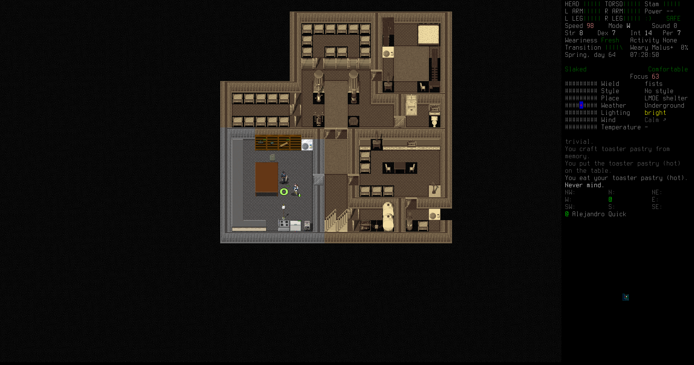He drags all the appliances into the workshop room for now. He'd crafted a standing lamp from flashlight parts, and built a battery recharging locker that he put by the workshop chair. He hooked up the oven, freezer, and water purifier too: food storage, cooking, and water access were no longer issues.
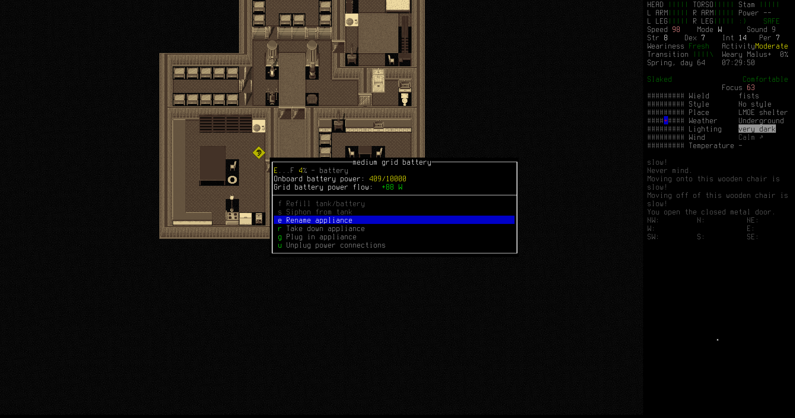The battery fills up. The core of the base is now complete. It's time for Erik to look toward the future of his cult, and to build his kingdom's organization, defensive weapons, and offensive power.